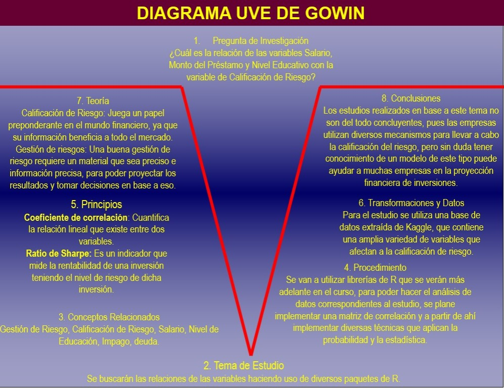

1 Bitacora 1
1.1 Parte de planificación
1.1.1 Definión de la idea
La idea principal de este trabajo es analizar una tabla de datos y extraer información de utilidad de ésta, recordemos que este trabajo es acerca de un curso de herramientas de datos, por lo que el enfoque de este es saber aplicar técnicas al estudio. Sin embargo, por fines académicos, buscaremos relaciones entre las variables, haciendo usos de las librerías que posee R, el cual será nuestro lenguaje de programación y análisis de datos, con los que realizaremos el trabajo.
El tema es de interés, pues tenemos una base de datos con una cantidad considerable de variables, que se prestan para hacer un análisis exhaustivo. En adición, los datos que posee la base de datos son datos financieros, que sin duda son de interés bajo el contexto de la carrera. Al realizar un análisis previo de la bibliografía, observamos quela información es realmente abundante, pues el tema de riesgos financieros es un tópico de suma importancia para las empresas.
1.1.2 Conceptualización de la idea
“Verificar una relación entre la calificación de riesgo con las variables Nivel de educación, Ingresos, Monto del préstamo”. De la pregunta anterior, nos interesa conceptualizar dicha idea, por lo que, buscando la definición de las palabras que conforman la idea, en la RAE, encontramos lo siguiente:
Relación: Conexión, correspondencia.
Nivel: Medida de una cantidad con referencia a una escala determinada.
Educación: Acción y efecto de educar, instrucción por medio de la acción docente.
Ingresos: Caudal que entra en poder de alguien, y que le es de cargo en las cuentas.
Calificación: Puntuación obtenida en un examen o en cualquier tipo de prueba.
Riesgo: Contingencia o proximidad de un daño.
1.1.3 Identificación de tensiones
Como mencionamos en el apartado anterior, el trabajo se centra más en el estudio de las herramientas utilizadas, que en la información del trabajo per se. Sin embargo, vamos a desarrollar la teoría de manera satisfactoria con el hecho de crear un trabajo bien estructurado. Dicho lo anterior, es claro que la calificación de riesgo es un fenómeno que depende de muchas más variables, un ejemplo de ello puede ser la cultura de la sociedad en la cual se ve inmersa la persona que solicita el préstamo, como la entidad que lo desembolsa. Por ello, el origen de los datos de esta tabla de datos es de suma importancia, pues la cultura de las personas que arrojaron estos datos puede influir de manera sustancial en la salida de los datos.
Otro factor a tomar en cuenta es por supuesto, la tabla de datos, pues podría contener información errónea, o datos que no estén correctamente digitados, además de que la tabla de datos tiene que ser convertida a información más trabajable, es decir, muchas de las variables son categóricas, por lo que una conversión a datos de diferente especie, podría provocar que haya errores en la nueva tabla que se va a manipular.
1.1.4 Reformulación de la idea en modo preguntas
La idea principal de este trabajo es: “Verificar una relación entre la calificación de riesgo con las variables Nivel de educación, Ingresos, Monto del préstamo”, por lo que para etsa parte del trabajo, vamos a formular la idea de diferentes formas, esto con el fin de formular una pregunta de investigación que sea clara.
¿Cuáles son las variables que influyen más en la calificación de riesgo? ¿Existe una correlación positiva entre las variables de interés y la calificación de riesgo? ¿Es la calificación de riesgo un buen calificador de las variables que la determinan? ¿Cómo se mide la calificación de riesgo dadas las variables consideradas?
1.1.5 Argumentación de las preguntas
Estas preguntas deben poseer una argumentación detrás de ellas, pues es necesario tener una idea de qué es lo que queremos realizar con estas preguntas o dicho de otra forma, cuál es el problema que potencialmente podemos resolver o la incógnita a contestar.8
1.1.5.1 ¿Cuáles son las variables que influyen más en la calificación de riesgo?
Contraargumentos
Las variables que se toman son realmente las correctas, cuál es el método que se utiliza para determinar que las variables que se están tomando son mejores para un resultado que otras. Al ser una calificación de riesgo, que facilita el préstamo a personas o no, las personas podrían tener intenciones perversas a siempre manipular su información para obtener buenas calificaciones. Por otro lado, son muchas las variables contempladas en la base de datos, hacer uso de un par de variables, podría influir de manera considerable en buscar una relación entre las variables.
Argumentos
Al realizar un análisis previo de la tabla de datos, podríamos determinar cuáles son las variables con mayor impacto en esta calificación, y así simplificar el modelo y darle un mayor énfasis en estas variables que afectan de manera considerable en la calificación.
Concluya
Al ser una calificación de riesgo, las empresas deben considerar varios factores, para ver si sus clientes son ideales para el préstamo o no. Por otro lado, concentrarnos en las variables que tienen mayor peso, podría ayudar a un mejor entendimiento de la calificación de riesgo.
1.1.5.2 ¿Existe una correlación positiva entre las variables de interés y la calificación de riesgo?
Contraargumentos Una relación positiva no implica que haya una mejor calificación, pues pueden existir variables con relación negativa, que tengan un efecto positivo sobre la calificación de riesgo, por pura intuición, podemos pensar en las personas que tienen un récord crediticio limpio, esto implicaría que esta variable debería tener un valor nulo para mejorar la calificación de riesgo. Otra variable que podría afectar es las veces que la persona ha caído en impago, pues entre más suba este valor, la calificación de riesgo, debería ser menor.
Argumentos
Las relaciones que buscamos no tienen por qué ser positivas, desde un tipo de vista de coeficiente de correlación, sino desde un tipo de vista de mejoría, es decir, variables que en ausencia contribuyan a una mejor calificación, nos son de interés para el trabajo. Como hemos mencionado encontrar las relaciones más contribuyentes, son de utilidad, pues favorecen a simplificar el modelo y obtener a cambio una mejor interpretación del estudio.
Concluya
Todas las relaciones son de importancia, hasta donde no existe relación, pues sirven para delimitar el modelo y determinar cuáles son las verdaderas variables que si influyen.
1.1.5.3 ¿Es la calificación de riesgo un buen calificador de las variables que la determinan?
Contraargumentos
Esta pregunta, no es del todo objetiva, pues dependerá de lo que la empresa quiera detectar en estas evaluaciones, es decir, un factor que determina en gran medida a la calificación de riesgo, en otra empresa no tiene por qué ser así, pues dependerá del público objetivo de la empresa. Un buen calificador de riesgo depende tanto de las variables que se toman en cuenta, como del contexto de la empresa.
Argumentos
Desde el punto de vista de la empresa, la calificación de riesgo es una herramienta que sirve para determinar en gran medida si un préstamo se realiza o no, por ello, saber si su calificación de riesgo logra captar la información deseada de las variables utilizadas, entonces se podría considerar un buen factor, pues, aunque las empresas deban tener cuidado a quiénes otorgan los préstamos, también es un hecho, que si no lo hacen, se quedan sin negocio
Concluya
Si la calificación de riesgo logra simplificar y consolidar la información, entonces podríamos conjeturar que se comporta como una buena calificación.
1.1.5.4 ¿Cómo se mide la calificación de riesgo dadas las variables consideradas?
Contraargumentos
La pregunta es más compleja que las hechas anteriormente, pues estamos entrando a un método de calificación, es decir, hacer un análisis de la medición, como mencionamos como un contraargumento en la pregunta anterior, esto no tiene por qué ser universal en las empresas, esto puede variar, por lo que dependerá del contexto en el cual se realice la pregunta.
Argumentos
En realidad que sea una pregunta que depende de sus variables, podría ser beneficioso, pues si existen varias metodologías, podríamos tener una mejor cartera de préstamos, es decir, dado cierto tipo de cliente, se podrían realizar cierto tipo de préstamos.
Concluya
La subjetividad de esta pregunta, no es ni buena ni mala, esta depende su contexto, si es aplicada de una buena forma, podría ser beneficioso tanto para la empresa, por ampliar su mercado, como para el cliente, al recibir el préstamo deseado.
1.1.6 Argumentación a través de datos
La base de datos utilizada en este trabajo se toma de la base de datos de Kaggle. Sin embargo, el autor de la base de datos no publica la información de cuándo es sacada la información. La información fue de fácil acceso pues está disponible en la de datos de Kaggle. La muestra observada son personas entre las edades de 18 a 69 años, de donde toman muchas variables, las cuales veremos más adelante. La unidad estadística estudiada para este trabajo son individuos que buscan obtener un préstamo.
Para la siguiente vamos a tomar el nombre las variables, las cuales dejaremos en el idioma original y vamos a dar la descripción de ellas, las cuales viene a su vez con la tabla de datos.
Age: La edad del individuo, una variable continua que influye en la estabilidad financiera.
Gender: Género del individuo, categorizado en Masculino, Femenino y No binario.
Education Level: Nivel de educación alcanzado, que varía desde la Secundaria hasta el Doctorado.
Marital Status: Estado civil actual, categorizado como Soltero, Casado, Divorciado o Viudo.
Income: Ingreso anual en USD, que representa la capacidad de ganancia del individuo.
Credit Score: Valor numérico que indica la solvencia crediticia, que varía de 600 a 800.
Loan Amount: La cantidad de préstamo solicitada por el individuo, que representa las necesidades financieras.
Loan Purpose: El propósito del préstamo, categorizado en Vivienda, Auto, Personal o Negocios.
Employment Status: Situación laboral del individuo, incluyendo Empleado, Desempleado o Autónomo.
Years at Current Job: Duración del empleo en el trabajo actual, que refleja la estabilidad laboral.
Payment History: Desempeño histórico de pagos, categorizado como Excelente, Bueno, Regular o Malo.
Debt-to-Income Ratio: Relación entre deuda e ingreso, que indica el apalancamiento financiero y el riesgo.
Assets Value: Valor total de los activos poseídos por el individuo.
Number of Dependents: Número de dependientes a cargo del individuo, que afecta las responsabilidades financieras.
City: Ciudad en la que reside el individuo, proporcionando contexto geográfico.
State: Estado en el que reside el individuo, proporcionando más detalles geográficos.
Country: País de residencia, añadiendo una perspectiva global.
Previous Defaults: Número de incumplimientos de préstamos anteriores, indicando el riesgo financiero histórico.
Marital Status: Número de cambios en el estado civil, reflejando cambios en la vida personal.
Risk Rating: Columna objetivo que categoriza el riesgo financiero en Bajo, Medio o Alto.
1.2 Revisión bibliográfica
1.2.1 Búsqueda de bibliografía
Entre las posibles combinaciones de palabras clave se se pueden encontrar:
Ingreso + situación laboral + solvencia crediticia
Prestamo + incumplimiento de préstamos + riesgo financiero
Ciudad + propósito del prestamo + ingreso
Situacion laboral + duración de empleo + historico de pagos
Historico de pagos + incumplimiento de prestamos + categoria de riesgo
Valor de activos + prestamo + relación entre deuda e ingreso
1.2.2 Fichas de literatura
Título: La valoración del riesgo financiero.
Autor: Dorina Chicu.
Año: 2020.
Nombre del tema: Métodos para medir el riesgo.
Cronología: 2020.
Metodología: Recolección de datos.
Temática: Estudios económicos.
Teórica: Valoración de riesgos.
Resumen en una oración: Distintos riesgos existentes y algunas formas de medirlos.
Argumento central: Analizar algunos de los distintos métodos existentes para medir los riesgos financieros.
Problema con el argumento o el tema: Aunque el tema principal gire en torno a la valoración de riesgos financieros, el trabajo queda falente de varios detalles que, si pudieran ser notorios a la hora de hacer un análisis más exhaustivo, además de la falta de ejemplos u aplicaciones de estos, quedan solo como algo teórico.
Resumen en un párrafo: El estudio busca centrarse en uno de los tres componentes de la inversión el cual es el riesgo financiero, de manera que se sabe que el objetivo principal de una empresa es maximizar sus beneficios, tal que llegue a asegurar la máxima rentabilidad posible. Por tanto, lo que se quiere brindar son los distintos métodos existentes que sirven para medir o valorar el riesgo, lo cual lleva a que sea posible generar una estrategia que permita mitigar los mismos.
Título: La evaluación del riesgo de crédito en las instituciones de microfinanzas: estado del arte.
Autor: María Seijas, Milagro Vivel, Rubén Lado, Sara Fernández.
Año: 2017.
Nombre del tema: Riesgos en los microcréditos.
Cronología: 2015 - 2017.
Metodología: Recolección y comparación de datos.
Temática: Estudios económicos.
Teórica: Valoración de riesgos.
Resumen en una oración: medición del riesgo de los microcréditos y análisis de los clientes.
Argumento central: Explorar la diversa teoría existente al riesgo de crédito de las instituciones financieras.
Problema con el argumento o el tema: Aunque el tema principal gire en torno a la valoración de riesgos financieros, el trabajo queda falente de varios detalles que, si pudieran ser notorios a la hora de hacer un análisis más exhaustivo, además de la falta de ejemplos u aplicaciones de estos, quedan solo como algo teórico.
Resumen en un párrafo: Este trabajo busca exponer a través de las investigaciones que se han centrado en la evaluación del riesgo de crédito en las Instituciones de Microfinanzas, aquella teoría relacionada con el riesgo presente en los microcréditos, además busca analizar todos aquellos factores que llegan a ser determinantes en el riesgo de que haya algún tipo de impago., por lo que este estudio también ofrece ciertas técnicas que generan una mayor consistencia y trasparencia en la evaluación y seguimiento de los clientes y su perfil.
1.3 Construcción de la UVE de Godwin

1.3.1 Conceptos básicos
Como hemos estado hablando a lo largo del trabajo, la calificación de riesgo es de suma importancia, por lo que el estudio posee como objetivo determinar una relación fuerte de las variables, para aproximar un método empírico de una calificación de riesgo, pues ya vimos que las empresas por lo general no comparten esta información.
Por otro lado, la gestión de riesgo y la incertidumbre se vuelven esenciales a lo largo del trabajo, pues son conceptos que son base para el estudio posterior. El riesgo de impago también se vuelve un concepto a tener en cuenta, el cual vamos a entender como la incapacidad de cumplir una obligación financiera.
1.3.2 Principios y teorías
Para llevar a cabo la investigación en estas etapas preliminares hemos hecho estudio bibliográfico de lo que son los análisis de calificación financiera, que es justo el tema y variable objetivo de nuestro estudio. También se incorpora la teoría de la gestión de riesgos, que a su vez hace uso de técnicas de probabilidad pues dentro de su corpus la idea principal es maximizar una ganancia en eventos que presentan incertidumbre, de ahí la estrecha relación que tiene con Probabilidad.
Por otro lado, utilizar los conceptos de la valoración de riesgos financieros, sirve de base para entender cómo funciona el mercado financiero, y cuáles son los impactos directos de poseer una calificación de riesgos, y que el impacto es de hecho, para todos los participantes.
1.4 Parte de escritura
El problema que se va a tratar en el presente trabajo es de determinar la relación existente entre las variables de ingresos, nivel de educación y Monto del préstamo con la calificación de riesgo. Desde el punto de vista teórico, el autor (Palacios 2012), menciona que “La principal función que radica en las calificaciones crediticias es la evaluación de la mayor o menor probabilidad de pago de la deuda y los intereses, proporcionando indicadores que sirvan de referencia a los inversores con el fin de que puedan tener conocimiento del riesgo crediticio de una forma simple y accesible”. Desde este punto de vista, hay un apoyo en la investigación que tratamos de realizar, pues la calificación de riesgo es de suma importancia en el mundo financiero. Este mismo autor menciona que “Su importancia deriva de su implantación dentro de la regulación, lo que afecta a todo el entramado institucional, y sectores clave de la sociedad como son el bancario y las agencias de seguros y reaseguros”, podemos ver entonces que la teoría respalda la importancia que hemos estado conjeturando en esta presente bitácora (Entiéndase conjeturando, porque aún no hemos realizado el análisis de la tabla de datos).
El estudio del análisis financiero es de suma importancia en la actualidad, ya que las transacciones de los flujos de dinero cada vez son mayores, es decir, vender deuda para obtener financiamiento en el corto plazo es una de las estrategias más aplicadas, por ello tanto inversores como prestatarios, según (Palacios 2012), “Los inversores hacen uso de las calificaciones crediticias como un indicador de la probabilidad de recuperar su dinero. Adicionalmente, los prestatarios pueden beneficiarse de tener calificada su deuda, con el objetivo de colocarla con mayor facilidad y eliminar las dudas que haya relación a ellos.” Por ello, ambas parten obtienen beneficio de que exista este rating en el mundo de la información financiera. Y desde el punto de vista del inversor, como menciona la autora (Chicu 2020), “…a la hora de analizar una inversión, debemos valorar la rentabilidad esperada, así como la liquidez que perdemos y el riesgo que estamos dispuestos a sumir”. Por lo tanto, poseer la información de rating es de suma utilidad, pues ayuda a los inversores a realizar mejores proyecciones. En adición, haciendo referencia a esta misma autora “…la gestión de riesgos tiene un lugar cada vez que un inversor analiza e intenta cuantificar las pérdidas potenciales en una inversión y luego toma las medidas apropiadas, considerando sus objetivos de inversión y su tolerancia al riesgo.” Esto último viene de la mano con lo que son las proyecciones, pues le permite al inversionista hacer un mejor análisis y una gestión de riesgos adecuada, que podemos definir según Chicu como “El proceso de identificación, análisis e incorporación de la incertidumbre en las decisiones de inversión” (Chicu 2020). Reforzando lo que menciona Chicu, la autora (Maria de los Ángeles Herrera 2024), menciona en adición a la gestión de riesgos “el contexto de incertidumbre genera inevitablemente un riesgo, y es ahí cuando la institución financiera debe preservar su valor económico y la integridad de los recursos confiados por los depositantes y socios.” Y añadiendo la definición de esta misma autora tenemos que la gestión de riesgos es “la denominación que se utiliza para el conjunto de técnicas y herramientas que pretenden maximizar el valor económico de la institución financiera, en un contexto de incertidumbre”. Concluyendo, la gestión de riesgos depende íntimamente de la calificación de riesgo, pues permite tener un parámetro ante la incertidumbre que representa invertir.